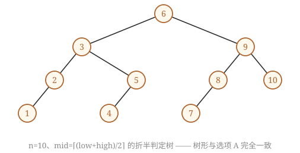

408
408查找题考的就是 ASL（平均查找长度）。这一话把顺序、折半、分块、散列四种放在一起比，并把折半判定树和线性探测手算练到不会错。
其之壹顺序与折半
ASL = Σ 查找概率 × 比较次数。成功和失败要分开算。
顺序查找
成功 ASL = (n+1)/2。失败（无序、有哨兵）= n+1。
有序顺序表的失败 ASL 可以提前结束，= n/2 + n/(n+1)。
int BinSearch(int a[], int n, int key) { int low = 0, high = n - 1, mid; while (low <= high) { mid = (low + high) / 2; if (a[mid] == key) return mid; else if (a[mid] > key) high = mid - 1; else low = mid + 1; } return -1; }
折半的过程可以画成判定树。n=11 时：
判定树三条
高度 h = ⌈log₂(n+1)⌉ = 最多比较次数（成功或失败都不超过 h）。
逐结点判据：mid 向下取整时，每个结点 右子树结点数 − 左子树结点数 ∈ {0, 1}；向上取整时反过来。整棵树要始终如一。
中序遍历有序（它也是 BST）。失败结点有 n+1 个，都在外部。
提示：判定树的结点数已经决定了它的形状——先数每棵子树的结点数，再看"左比右多一个"还是"左比右少一个"，全树必须始终如一。

再深一层
对树中【每一个】结点，令 L=左子树结点数、R=右子树结点数： 向下取整 ⌊⌋ ⟹ 恒有 L = R 或 L = R − 1 （左边永远不比右边多） 向上取整 ⌈⌉ ⟹ 恒有 L = R 或 L = R + 1 （左边永远不比右边少） ⚠️ 同一棵树里【只准出现一种取整方式】，不许一会儿多一个一会儿少一个。逐个数结点（判定树中 n 个元素 ⟹ n 个结点，方形失败结点题干已声明不含）：
A（n=10）：根 5|4(左多1) → 左子树 2|2 → 右子树 2|1(左多1) → 三处 size-2 的结点全挂【左】孩子(1|0)
全树只出现 “相等 / 左多一个” ⟹ 处处是 ⌈⌉ ✅ 合法
B（n=11）：根 5|5 ✔，但左半的两个小结点挂【左】孩子(1|0)、右半的两个挂【右】孩子(0|1)
同一棵树里既有 ⌈⌉ 又有 ⌊⌋ ✘
C（n=9）： 根 4|4 ✔，左子树 1|2(左少一个=⌊⌋)、右子树 2|1(左多一个=⌈⌉) 打架 ✘
D（n=10）：根 4|5(左少一个=⌊⌋)，但左子树 2|1(左多一个=⌈⌉) 打架 ✘📌 把判据翻译成看图的动作，考场上三秒一棵：盯住所有"只有一个孩子"的结点——它下面挂的是左孩子还是右孩子？整棵树必须一边倒。B 里有左有右，当场出局；C、D 再往上数一层也立刻矛盾。⚠️ 三个容易翻车的地方：
· 别拿"是不是平衡二叉树"当判据——B、C、D 全是平衡二叉树，照样不是判定树。平衡只是必要条件，"结点数分配"才是充要条件。
· 别以为高度对了就行——四个选项高度都是 4。
· 判定树唯一，但"唯一"是对给定 n 与取整方式而言：n=10 有两棵合法判定树（⌊⌋ 一棵、⌈⌉ 一棵），本题的 A 是 ⌈⌉ 那棵，D 既不是 ⌊⌋ 那棵也不是 ⌈⌉ 那棵。
⚠️【注意】判定树中的方形结点是虚构的，不计入比较次数。
再深一层
📌 把这条结论钉死，2023 真题（第 24 题）就是同一句话换个 n：
折半查找的最多比较次数（成功、失败都一样）= 判定树高度 h = ⌈log₂(n+1)⌉ n=16 → 5 n=600 → 10 n=1000 → 10 n=1023 → 10⚠️ 本题最经典的错法是答 6——把最底层的方形失败结点也数进去了。方形结点是"虚构的失败区间"，走到它时你早已从它的父结点得知失败，比较停在父结点。记住这句话，本章至少能保三道题。
再深一层
规则：维护区间 (lo, hi)，初始 (−∞, +∞)
每比较一个 x：先检查 lo < x < hi；
若下一个比 x 小 ⟹ 往左走 ⟹ hi = x；否则 lo = x。A. 500 → 200(左, hi=500) → 450(右, lo=200) → 180 ✘ 此时区间是 (200, 500)，而 180 < 200 ⟹ 矛盾，不可能 B. 500 → 450 → 200 → 180 一路向左，区间 (−∞,500)(−∞,450)(−∞,200) ✔ C. 180 → 500 → 200 → 450 (180,+∞) → (180,500) → (200,500) ✔ D. 180 → 200 → 500 → 450 (180,+∞) → (200,+∞) → (200,500) ✔📌 直觉版说法：一旦你从 450 往左拐，后面的所有数都必须比 450 小，并且比之前拐过的 200 大——A 违反了后半句。
⚠️ 注意题干问的是"折半查找"的比较序列，但判定法则和"BST 查找路径"完全一样（7.3 的 2011 真题就是同一招）。严格来说折半判定树还要满足"左右子树结点数差不超过 1"，但本题四个选项只用 BST 约束就能分出胜负——考场上先用夹逼，不够再上结点数。
本算法与折半查找算法相比，有可能具有更少比较次数的情形是（ ）。
k=0; while(k<n 且 A[k]<x) k=k+3; if(k<n 且 A[k]==x) 查找成功; else if(k-1<n 且 A[k-1]==x) 查找成功; else if(k-2<n 且 A[k-2]==x) 查找成功; else 查找失败;
再深一层
x 的位置 本算法比较次数 折半查找 第 1 个附近 ≈1～2 次 ≈⌈log₂n⌉ ≈ 10+ 次 ⟹ 本算法赢 ✔ 正中间 ≈n/6 次（几百次） ≈1～2 次 ⟹ 折半赢 末尾 ≈n/3 次（三百多次） ≈10 次 ⟹ 折半赢 不在数组中 ≈到越界为止 ≈10 次 ⟹ 折半赢📌 本题与第 6 题（"折半必然快吗"）是同一个道理的两次考查：折半查找赢在平均与最坏，输在"目标就在表头"这种极端好运的情形。任何"从头扫"的算法，在 x 靠近开头时都能碾压折半。
⚠️ 步长为 3 不改变量级：这个算法的时间复杂度仍是 O(n)（常数变成 1/3），而折半是 O(log₂n)。选项问的是"有可能更少"而不是"平均更少"，所以答的是那个特例。
其之貳分块查找
块内无序、块间有序，再建一个索引表。ASL = 索引查找 + 块内查找。
分块 ASL
长度 n 分 b 块、每块 s 个：
索引和块内都顺序查：ASL = (b+1)/2 + (s+1)/2，当 s = √n 时最小，为 √n + 1。
索引用折半：ASL = ⌈log₂(b+1)⌉ + (s+1)/2。
1）若采用顺序存储结构保存 S，且要求平均查找长度更短，则元素应如何排列？应使用何种查找方法？查找成功时的平均查找长度是多少？
2）若采用链式存储结构保存 S，且要求平均查找长度更短，则元素应如何排列？应使用何种查找方法？查找成功时的平均查找长度是多少？
→ 顺序存储 + 按概率降序排列（"while"、"do" 概率 0.35 在前）+ 顺序查找法；ASL = 0.35×1 + 0.35×2 + 0.15×3 + 0.15×4 = 2.1（比折半的 2.2 短）。
2）链式存储：答案 1：只能顺序查找，按概率降序排列构成单链表，ASL = 2.1。
答案 2：还可构造成二叉排序树（二叉链表存储），采用 BST 查找：二叉排序树 1：根 "for"，左 "do"，右 "while"，"while" 的左孩子 "repeat"；二叉排序树 2：根 "repeat"，左 "do"（右孩子 "for"），右 "while"。
ASL = 0.15×1 + 0.35×2 + 0.35×2 + 0.15×3 = 2.0（最短）。
再深一层
本题的题眼：折半查找完全没有用到"概率"这条信息，而概率恰恰是本题最值钱的条件。0.35 / 0.15 / 0.15 / 0.35 极不均匀，谁靠前谁吃香。
1）顺序存储 —— 把两个 0.35 顶到最前面：
排列（概率降序）：while(0.35), do(0.35), for(0.15), repeat(0.15)
↑ 两个 0.35 谁前谁后都行，ASL 不变
查找方法：顺序查找（⚠️ 不是折半——折半要求按【字典序】排，那会把 0.15 的元素放到前面）
ASL = 0.35×1 + 0.35×2 + 0.15×3 + 0.15×4 = 0.35+0.70+0.45+0.60 = 2.10 < 2.2 ✅📌 这就是第 4 题那句口诀的真题版：顺序查找 + 概率已知 ⟹ 按概率降序排列，ASL 最小（可用排序不等式严格证明：让最小的 Ci 配最大的 pi）。2）链式存储 —— 别停在"只能顺序查找"：
· 朴素答案：单链表按概率降序串起来，顺序查找，ASL = 2.1（与第 1 问同分子）；
· 更优答案：二叉排序树也是链式结构（二叉链表）！把 4 个元素排成一棵 BST，让高概率元素靠近根：
BST①： for(0.15) BST②： repeat(0.15)
/ \ / \
do(0.35) while(0.35) do(0.35) while(0.35)
/ \
repeat(0.15) for(0.15)
两棵树的层数分布完全相同：0.15 在第1层、两个 0.35 在第2层、0.15 在第3层
ASL = 0.15×1 + 0.35×2 + 0.35×2 + 0.15×3 = 0.15+0.70+0.70+0.45 = 2.00 ✅📌 为什么 2.0 是最优：4 个结点的 BST 共有 卡特兰数 C₄ = 14 棵，程序穷举全部 14 棵，最小 ASL 恰为 2.0（由 BST① 与 BST② 两棵同时达到）。把两个 0.35 都放到第 2 层、把 0.15 顶上去当根——牺牲低概率元素换高概率元素，这就是"最优二叉搜索树"的核心直觉。⚠️ 三个必须警惕的地方：
· BST 的形状不能乱排——它必须仍满足"左 < 根 < 右"的字典序约束，你只能在 14 棵合法 BST 里挑，不能像顺序表那样随便放；
· "链式存储只能顺序查找"是错的（第 1 节正文里的原话是"链表只能顺序查找"，指的是线性链表）——树形的链式结构照样能做对数级查找。这一字之差就是本题第 2 问的全部得分点。
· 别去算"最优二叉搜索树"的动态规划——4 个结点手工枚举几棵就够了，考场上没时间也不必写 DP。
📌 三个方案的成绩单，一起记住：
折半查找（字典序顺序表） ASL = 2.2 ← 题干给的，最差 顺序查找（概率降序） ASL = 2.1 BST 查找（链式） ASL = 2.0 ← 最优结论一句话：概率悬殊时，"排列自由度"比"算法先进性"更值钱。
其之參散列
储物柜
不比较，直接算出柜号。两个人算出同一个柜号就是冲突，主要工作就是处理冲突。
常用构造与冲突处理
散列函数：除留余数法 H(k)=k%p（p 取不大于表长的最大质数）；直接定址、数字分析、平方取中。
开放定址法：Hᵢ = (H(k)+dᵢ) % m。线性探测 dᵢ=1,2,3…；平方探测 dᵢ=1²,−1²,2²,−2²…；双散列。
拉链法：同一个地址的放一条链表。
装填因子 α = n / m。ASL 只依赖 α，不直接依赖 n。
删除和聚集
开放定址法不能直接删除，只能做标记（否则断了后面的探测路径）。拉链法可以直接删。 堆积（聚集）：线性探测的特点，它让不同同义词竞争同一批地址，直接影响的是 ASL，不影响存储效率。
再深一层
散列函数 ┐ 冲突处理 ┼→ 堆积 → 平均查找长度 ↑ ← 只有这一条箭头是"堆积 →" 装填因子 ┘ A 存储效率 = 装填因子 = n/m ——— 堆积不会改变 n，也不会改变 m ⟹ 纹丝不动 B 散列函数 ——— 是你写死的一个函数，堆积再严重它也不会自己变 C 装填因子 ——— 同 A📌 "存储效率 = 装填因子"这个等式是本题的送分点（书答明说两者定义相同），A 和 C 实际上是同一个选项——选择题里出现两个等价选项，它们必然同时错（否则答案不唯一）。这一招可以在考场上把四选一直接压成二选一。
⚠️ 注意题问的是"直接影响"：堆积当然会让人想扩容（间接影响 α），但那是人为反应，不是堆积本身造成的。"直接"两个字把间接链条全部排除。
Ⅰ. 增大装填（载）因子
Ⅱ. 设计冲突（碰撞）少的散列函数
Ⅲ. 处理冲突（碰撞）时避免产生聚集（堆积）现象
再深一层
三因素 往哪个方向调 → 效率提高 装填因子 α 调小（Ⅰ 说"增大"，方向反了） 散列函数 设计得更均匀、冲突更少（Ⅱ ✔） 冲突处理方法 避免聚集（Ⅲ ✔）📌 Ⅰ 是"三因素之一，但方向反了"的典型出题法：装填因子确实是影响因素（所以 2022 年问"是否影响"时它是对的），但"增大它"是往差里调（所以 2011 年问"是否提高效率"时它是错的）。同一个 α，两道真题给出相反的判断——判断题的关键永远是"问的是有没有影响，还是往哪调"。
📌 α 调小的代价是空间：α → 0 意味着表长趋于无穷，时间与空间在这里做交换，工程上一般取 0.5~0.8（超过 0.75 就该扩容重散列）。考场上若问"能否把 α 降到 0"，答案是"能，但空间浪费不可接受"。
⚠️ 本题的 Ⅲ 与第 9 题构成因果闭环：第 9 题（聚集因冲突处理方法不当而生）→ 本题 Ⅲ（换好方法可避免聚集）→ 2014 真题（聚集直接抬高 ASL）。三题串起来背，散列表的概念题就没有死角了。
手算 ASL
成功：每个关键字比较次数之和 ÷ 关键字数。
失败：对散列函数的每个可能取值（注意是 mod p 的 p 个，不是表长 m），一直走到空位，比较次数算上这次碰到空位的比较 ÷ p。
下面就是 2010 大题的数据，表长 10（α=0.7），H=(key×3)%7，全部由程序计算：
| 地址 | 0 | 1 | 2 | 3 | 4 | 5 | 6 | 7 | 8 | 9 |
|---|---|---|---|---|---|---|---|---|---|---|
| 关键字 | 7 | 14 | 8 | 11 | 30 | 18 | 9 | |||
| 成功比较次数 | 1 | 2 | 1 | 1 | 1 | 3 | 3 |
ASL成功 = 12/7 = 1.71；ASL失败（对 H(key) 的 7 个取值）= (3+2+1+2+1+5+4)/7 = 18/7 = 2.57
1) 请画出所构造的散列表。
2) 分别计算等概率情况下，查找成功和查找不成功的平均查找长度。
| key | 7 | 8 | 30 | 11 | 18 | 9 | 14 |
|---|---|---|---|---|---|---|---|
| H(key) | 0 | 3 | 6 | 5 | 5 | 6 | 0 |
| 地址 | 0 | 1 | 2 | 3 | 4 | 5 | 6 | 7 | 8 | 9 |
|---|---|---|---|---|---|---|---|---|---|---|
| 关键字 | 7 | 14 | 8 | 11 | 30 | 18 | 9 |
ASL成功 = (1+2+1+1+1+3+3)/7 = 12/7。
⚠️ 在计算查找失败的 ASL 时，要特别注意防止思维定式：查找失败的情况下既不是根据表中的元素个数，也不是根据表长来计算平均查找长度。查找失败时，经过散列函数计算后只可能映射到表中的 0~6 位置，且映射到 0~6 中任意一个位置的概率相同。因此，是根据散列函数（mod 后面的数字）来计算平均查找长度的。
| H(key) | 0 | 1 | 2 | 3 | 4 | 5 | 6 |
|---|---|---|---|---|---|---|---|
| 比较次数 | 3 | 2 | 1 | 2 | 1 | 5 | 4 |
再深一层
1）建表（注意 H 要先乘 3）
key 7 8 30 11 18 9 14
key×3 21 24 90 33 54 27 42
%7 0 3 6 5 5 6 0
落点 0 3 6 5 7 8 1
比较 1 1 1 1 3 3 2 ⟹ ASL成功 = 12/7 ≈ 1.71
↑18: 5被占,6被占,7空 ↑9: 6被占,7被占,8空
地址 0 1 2 3 4 5 6 7 8 9
7 14 空 8 空 11 30 18 9 空2）失败 ASL：起点只有 0~6，一直走到第一个空位起点 0：0(7) 1(14) 2空 → 3 起点 1：1(14) 2空 → 2 起点 2：2空 → 1 起点 3：3(8) 4空 → 2 起点 4：4空 → 1 起点 5：5(11) 6(30) 7(18) 8(9) 9空 → 5 起点 6：6(30) 7(18) 8(9) 9空 → 4 ⟹ ASL失败 = (3+2+1+2+1+5+4)/7 = 18/7 ≈ 2.57📌 三个数字必须分得清清楚楚：记录数 n = 7（成功 ASL 的分母）、表长 m = 10（决定探测回绕）、模 p = 7（失败 ASL 的分母）。本题 n 和 p 碰巧都是 7，但它们的含义完全不同——2019 那题把三个数设成 8、11、7，谁没分清谁就掉坑。
📌 地址 7、8、9 不能当失败起点，但要被路过：散列函数 (key×3)%7 的值域只有 0~6，所以 7、8、9 三格永远不是起点；可它们里面装着 18 和 9，把起点 5、6 两条路拖长到 5 次和 4 次。"不当起点、但算路程"是这类题的固定套路。
⚠️ 装填因子在这里是"给出表长"的线索，不是要你去验算：α = 0.7 ⟹ m = n/α = 7/0.7 = 10。凡是题目给 α 又不给表长，第一步一定是反推表长（综合 04 同型）。
⚠️ 本题的 (key×3) 是障眼法：只是让 H 值不那么容易口算，没有任何深意——但漏乘 3 会让整张表全错，先把七个 key×3 写成一行再统一取模。
再深一层
地址 0 1 2 3 4 5 6
22 43 15
查找长度 1 2 3 ⟹ ASL成功 = (1+2+3)/3 = 2
秒杀公式：K 个同义词 ⟹ ASL成功 = (K+1)/2 = (3+1)/2 = 2📌 三个干扰项的来历都很典型：A(1.5) 是把分母写成表长 7 之外的某个数、或只算了前两个；B(1.6) = 8/5 是把某些次数少数一次；D(3) 是只报了"最长的那条"（15 的查找长度）。ASL 是平均值，永远要除以关键字个数 n=3。⚠️ 成功 ASL 的分母是 n（表中记录数），失败 ASL 的分母是 mod 的模——本题若改问失败 ASL：H 值域 0~6 共 7 个起点，代价依次为 1(地址0空)、4、3、2、1、1、1，ASL失败 = 13/7 ≈ 1.86。两个分母千万别串。
| 散列地址 | 0 | 1 | 2 | 3 | 4 | 5 | 6 | 7 | 8 | 9 | 10 |
|---|---|---|---|---|---|---|---|---|---|---|---|
| 关键字 | 98 | 22 | 30 | 87 | 11 | 40 | 6 | 20 |
ASL失败 = (9+8+7+6+5+4+3)/7 = 6。故选 C。
再深一层
地址 0 1 2 3 4 5 6 7 8 9 10
98 22 30 87 11 40 6 20 空
起点 ↓ ↓ ↓ ↓ ↓ ↓ ↓ ← 只有 0~6 能当起点（H=key%7）
代价 9 8 7 6 5 4 3 ← 一路走到地址 8 那个空位才敢判失败
ASL失败 = (9+8+7+6+5+4+3)/7 = 42/7 = 6📌 三条铁律，缺一不可：① 起点个数 = mod 的模（7），不是表长（11）也不是记录数（8）；② 每条路要一直走到第一个空位才算结束；③ 撞上空位的那一次也算一次比较（所以起点 6 是 3 次而不是 2 次）。📌 20 落在地址 7 是全题最容易忽略的一环：20%7=6 被 6 占 → 挤到 7。地址 7 里虽然有记录，但它永远不会成为"失败查找的起点"（因为没有 key 能算出 7）——书答那句"散列函数不可能计算出地址 7"就是在说这个。它不当起点，但要被路过，所以每条路都被它拖长了一格。
⚠️ 四个选项全是"用错分母/起点数"的产物（程序逐一复现）：B(5.25) = 42/8（误用记录数 8 作分母）；D(6.29) = 44/7（把地址 7 也算成起点，分子多了 2，分母却还是 7）；用表长 11 作分母则得 47/11≈4.27（接近 A 的 4）。——四个选项，四种错法，只有严格按"分母 = mod"才落到 C。
领域展开
折半：判定树高 ⌈log₂(n+1)⌉，右比左多 0 或 1。
分块：s=√n 最优。
散列：ASL 只看 α；失败除 p 不除 m；开放定址不能硬删。